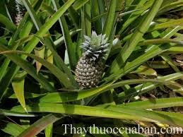

Tên khác:
Tên thường gọi: Dứa, Khóm, Thơm, khớm, huyền nương
Tên tiếng Trung: 菠萝
Tên khoa học: - Ananas comosus (L.) Merr
Họ khoa học: thuộc họ Dứa - Bromeliaceae.
Cây dứa
(Mô tả, hình ảnh cây dứa, phân bố, thu hái, thành phần hóa học, tác dụng dược lý...)
Mô tả:

Cây thường ra hoa quả vào mùa hè.
Bộ phận dùng:
Quả, nõn cây và rễ cây – Fructus, Gemma et Radix Ananatis.
Nơi sống và thu hái:
Gốc ở Brazin, được trồng khắp nơi để lấy quả ăn và xuất khẩu. Thu hoạch quả và rễ quanh năm, nõn thu hái tốt nhất vào mùa xuân; thường dùng tươi.
Tại Việt Nam, dứa được trồng khá phổ biến, phân bố từ Phú Thọ đến Kiên Giang. Tiền Giang là tỉnh có sản lượng dứa đứng đầu cả nước. Năm 2007, sản lượng dứa của tỉnh Tiền Giang đạt 161.300 tấn. Tiếp theo là Kiên Giang (85.000 tấn), Ninh Bình (47.400 tấn), Nghệ An (30.600 tấn), Long An (27.000 tấn), Hà Nam (23.400 tấn), Thanh Hoá (20.500 tấn). Tổng sản lượng cả nước năm 2007 đạt 529.100 tấn. Nhiều địa phương xây dựng thương hiệu đặc sản quả dứa như dứa Đồng Giao (Tam Điệp - Ninh Bình), hoặc ở Kiên Giang, Tiền Giang đều có những nhà máy chuyên sản xuất, chế biến các thực phẩm từ quả dứa.
Thành phần hoá học:
Quả dứa có các thành phần sau đây: nước 75,7%, protid 0,68%, lipid 0,06%, glucid 18,4% (saccharose 12,43%, glucose 3,21%), chất chiết xuất 4,35%, cellulose 0,57%, tro 1,24%. Còn có acid citric, acid malic và các vitamin A, B, C. Trong quả có một chất men tiêu hoá là bromelin có thể thuỷ phân trong vài phút một lượng protein bằng 1000 lần trọng lượng của nó và so sánh được với pepsin và papain. Ngoài ra còn có iod, magnesium, mangan, kalium, calcium, phosphor, sắt, lưu huỳnh.
Tác dụng dược lý
Dứa có chứa nhiều vitamin C giúp chống oxy hóa, tốt cho da, tăng sức đề kháng. Nghiên cứu được công bố gần đây trên website của Hội Da liễu New Zealand, DermNet NZ cho biết, các loại kem dưỡng da chứa thành phần vitamin C có thể bảo vệ da chống lại những tác động lão hóa từ ánh nắng mặt trời, có tác dụng làm giảm nếp nhăn.
Các nghiên cứu vào các năm 1960 - 1970, đã xác định bromelin của trái dứa có đặc tính kháng phù và kháng viêm. Từ đó, vài công ty dược đã đưa ra các thực phẩm bổ sung có chứa chất chiết từ Dứa để giải quyết viêm mô tế bào, để làm tan các cục mỡ nổi cộm. Tuy nhiên, chưa có nghiên cứu nào xác định Dứa có khả năng làm tan các khối mỡ không đẹp này.
Ở Đức, trẻ em bị viêm xoang thường được chữa trị bằng bromelin, chiết xuất từ Dứa (Huyền Nương). Bromelin cho kết quả tốt, nó làm giảm thời gian bị bệnh (từ 8 ngày, còn 6 ngày). Bromelin là một enzym giúp thủy phân protein (có trong thịt cá) thành các axit amin có tác dụng tốt trong việc tiêu hóa và phân giải lượng calo thừa trong cơ thể (loại bỏ khỏi cơ thể gần 1/3 chất béo có trong khẩu phần ăn tương đương 510 calo/ ngày)... nên nó có tác dụng giảm cân tự nhiên, rất an toàn và vô cùng hiệu quả.
Một loại giun nhỏ, thường gặp ở trẻ em. Qua nghiên cứu của Hordegen P., bromelin cũng cho kết quả tốt như Pyratel.
Một số enzym của quả Dứa làm mau lành các vết thương ở da hay các vết phỏng. Chuột bị phỏng, khi dùng chất chiết xuất từ Dứa giúp tiến trình làm sạch một vết thương sau 4 giờ, lấy đi các vật lạ và mô chết để không còn trở ngại nào cho vết thương lành lại. Bromelin còn làm giảm hiện tượng phù nề, các vết bầm tím trên da và giảm đau nhức.
Bromelin giảm đau nhức do hư khớp: Ở Đức, trên thị trường có một sản phẩm chứa 90 mg bromelin, 48 mg trypsin (enzym nguồn động vật) và 100 mg rutin (một flavonoid bảo vệ mao mạch). Thử nghiệm nhằm so sánh sản phẩm này trong 6 tuần trên 90 người bị hư khớp háng với diclofenac (100 mg/ ngày), là một kháng viêm không steroid. Kết quả điều trị tốt như diclofenac về đau nhức do hư khớp, không có tác dụng phụ. Kết quả tốt đối với đau nhức ở các khớp khác
Vị thuốc dứa
(Công dụng, liều dùng, tính vị, quy kinh...)
Tính vị
Quả dứa có vị chua ngọt, tính bình.
Tác dụng:
Dứa có tác dụng giải khát, sinh tân dịch, giúp tiêu hoá; nước dứa nhuận tràng, tiêu tích trệ.
Nõn dứa thanh nhiệt giải độc; rễ dứa lợi tiểu.
Dịch ép lá và quả chưa chín có tác dụng nhuận tràng và tẩy.
Công dụng, chỉ định và phối hợp:
Được chỉ định dùng trong các trường hợp: Thiếu máu, giúp sự sinh trưởng, dưỡng sức, thiếu khoáng chất, trong chứng khó tiêu, khi bị ngộ độc, trong các bệnh xơ cứng động mạch, viêm khớp, thống phong và sỏi, trong chứng béo phì. Bromelin được dùng chữa bệnh rối loạn tiêu hoá dạ dày - ruột, dùng làm thuốc tiêu viêm, giảm phù, chữa các vết thương, vết bỏng cho mau lành sẹo. Dứa còn là nguyên liệu chiết bromelin, có nhiều trong thân dứa (phần lõi trắng của chồi), trong quả (ở vỏ dứa có nhiều hơn trong dịch chiết quả. Thường dùng quả chín để ăn tươi hoặc ép lấy nước uống hoặc dùng bromelin.
Ứng dụng lâm sàng của vị thuốc dứa
Chữa sốt nóng:
Nõn dứa 30-40g giã vắt lấy nước cốt, uống hay sắc uống.
Chữa tiểu tiện không thông, đái ra sạn, sỏi:
Dùng rễ cây Dứa 30-40g sắc uống.
Trường hợp bị say nắng (trúng thử), hoặc sốt cao, sốt vàng da:
Dùng nõn dứa (phần non của ngọn cây dứa), khoảng 50g, giã nát, vắt lấy nước cốt cho uống. Có thể dùng nhiều lần trong ngày. (Theo GS.TS. Phạm Xuân Sinh).
Chữa sỏi đường tiết niệu, bí tiểu tiện, tiểu buốt, tiểu ra máu:
Dứa một quả, gọt bỏ vỏ, thêm khoảng 0,3 g phèn chua, nấu trong 3 giờ liền. Lấy ra ăn các miếng dứa và uống nước nấu. Dùng liền một tuần lễ. Hoặc dùng rễ cây dứa, rửa sạch, thái nhỏ, sắc uống 30 - 50g/ngày. Uống nhiều ngày tới khi hết các triệu chứng trên. (Theo GS.TS. Phạm Xuân Sinh).
Nhuận tràng và tẩy:
Lấy 50g quả dứa xanh, gọt vỏ, ép lấy dịch cho uống. Cần chú ý, cách dùng này, không thích hợp cho phụ nữ có thai.
Viêm ruột, tiêu chảy:
Lá dứa 30 gam sắc uống.
Cảm nóng phiền khát:
1 quả dứa giã nát lấy nước, hòa nước sôi để nguội uống.
Viêm thận:
Dứa quả 60 gam, rễ cỏ tranh tươi 30 gam, sắc uống thay nước chè.
Rối loạn tiêu hóa:
Dứa 1 quả, quýt 2 quả, ép lấy nước uống.
Viêm phế quản:
Dứa quả 120 gam, mật ong 30 gam, lá tỳ bà 30 gam, sắc uống.
Tham khảo
Lưu ý khi ăn dứa
Khi ăn dứa cần phải cắt gọt hết các “mắt dứa”, vì trong mắt quả dứa có chứa một số nấm (Candida), nếu ăn phải rất dễ bị ngộ độc: người choáng váng, buồn nôn, đau bụng, nôn mửa tiêu chảy... Nhân dân thường có kinh nghiệm chữa ngộ độc dứa bằng cách lấy vỏ quả dứa, khi gọt, nấu lên, lấy nước cho uống là khỏi. Tuy nhiên cũng cần theo dõi, nếu quá nặng, phải kịp thời đưa đến cơ sở y tế để cấp cứu. (Theo GS.TS. Phạm Xuân Sinh)
Tag: hinh anh cay dua, vi thuoc dua, tac dung cua dua, cong dung cua dua, thuoc nam
Tag: cay dua, vi thuoc dua, cong dung dua, Hinh anh cay dua, Tac dung dua, Thuoc nam
Thaythuoccuaban.com Tổng hợp
*************************